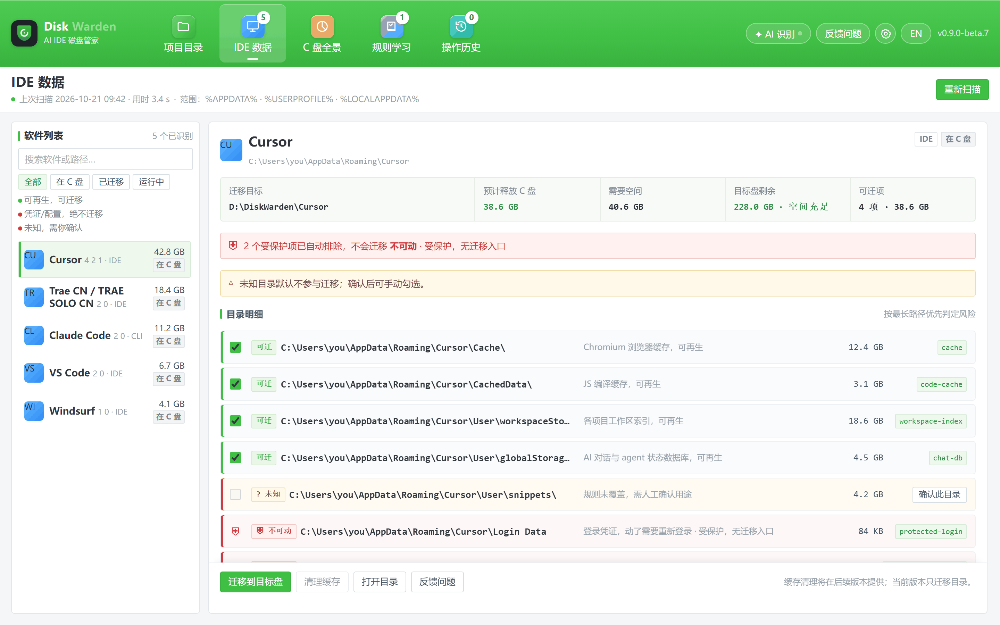

200 GB+
有用户报告 Claude Code 的调试日志陷入循环，单个调试文件超过 20 GB，磁盘占用达到 200 GB 以上。
AI IDE 存储管家
Disk Warden 找出 Cursor、Trae、Claude Code 等 AI 工具的数据目录，把可再生的部分迁到其他磁盘，并在原路径留下链接——工具照常读取原来的路径，凭证和配置不动。
Windows 测试版本已经可以构建（0.9.0-beta.7，未签名），但还没有公开安装包——这个按钮是刻意禁用的。
AI IDE 会在本地保存数据库、工作区索引、日志和会话记录。这些不是你的源码，多数可以重建；但它们和登录凭证、配置处在同一棵目录树下。手动清理，正是丢登录状态的常见原因。
200 GB+
有用户报告 Claude Code 的调试日志陷入循环，单个调试文件超过 20 GB，磁盘占用达到 200 GB 以上。
44,635
另一位用户的复现中，约四周内 ~/.claude/debug 累积了 44,635 个文件。
5.86 GB
Cursor 社区论坛报告单个本地数据库达到 5,860,462,592 字节（约 5.86 GB），其中一个键约占 3.1 MB。
来源：Cursor 论坛帖子
以上均为公开的 bug 报告与社区帖子，逐条附了链接，不是我们的实测数据。你的目录大小会不同，一个工具也可能同时存在多个这样的目录。
三步完成，在第二份副本校验通过之前，没有任何不可逆的操作。
扫描你在用的 AI IDE / CLI 的已知数据根：Cursor、Trae、Claude Code、VS Code、Windsurf 等。每个目录标成绿色（可迁）、黄色（未知，先询问）或红色（不可动）。
写入任何数据之前，先看清哪些目录会移动、C 盘能释放多少、目标盘需要多少。没有确认过的目录原地不动。
复制、校验，再把原目录替换为目录联接（junction）。工具读取的仍是原路径，新数据写入目标盘。不用重装，不用改配置。
三个默认行为，尽量不打扰你。
欢迎页和 GitHub 登录正在开发中。上线后，跳过始终是并列的选择：扫描、迁移和回滚都在本机完成，不需要账号。
GitHub Star 引导只是一行可以关掉的提示，不挡操作，也没有任何功能依赖它。
不打开 AI 分析，就不会把任何内容发到本机之外。API Key 在本机用 Windows DPAPI 加密保存——不上传，也不写进配置文件。
下面四项检查在每次迁移时都会执行，不只是第一次。
登录数据、Local State、settings 和记忆文件属于红色项：不复制、不移动、不建链。会被搬走的是缓存、索引、日志和会话记录。
每次迁移都列出目录、释放量和目标盘需求量。未知目录必须逐条确认，才能进入迁移清单。
复制完成后按相对路径集合、文件数、总字节校验。任何一项不一致，源目录保持完整，不会创建链接。
数据随时可以迁回 C 盘。只有迁回并校验通过后，才会清理目标盘上的副本。
迁移被中断时，下次启动会识别未完成的任务：要么完成恢复，要么停下来让你决定，不做猜测。全程不申请管理员权限，扫描、迁移和回滚都不发起网络请求。
每个工具一屏：哪些能搬、哪些受保护、这次迁移能释放多少。

Windows 版本正在测试，macOS 版本开发中。目前还没有公开发布——首个公开版本会出现在 GitHub Releases。
测试版本 0.9.0-beta.7 · 未签名 · 尚未发布
已有测试构建，但还没有公开安装包。这个按钮是刻意禁用的。首个公开版本将发布在 GitHub Releases。
在 GitHub 关注发布基于 PolyForm Noncommercial License 1.0.0 开放源码。个人免费；商业使用需单独授权。
任何商业用途——包括公司内部使用——都需要单独的商业授权。请联系 13439731205@163.com 或致电 +86 134 3973 1205。
查看完整许可证文本 源码可见，但不是 OSI 认可的开源许可证。
不会。对话、缓存、日志和索引可以迁移；登录数据、配置和记忆属于红色项，完全不会触碰。被移走的都是工具可以重建的数据。
能。原路径会变成一个指向新位置的目录联接，应用打开的仍是原来的路径。新产生的数据写入目标盘，不需要改任何配置。
选中已迁移的工具，点「迁回 C 盘」。数据会复制回原路径并校验，确认无误后才清理目标盘上的副本。只要迁移数据还在，回滚就一直可用。
必须。被占用的文件无法可靠复制。检测到工具在运行时，迁移会被阻断而不是强制执行——Disk Warden 不会替你结束进程。
Cursor、Trae（国内版与国际版）、Claude Code、VS Code、Windsurf，以及其他已知的 AI IDE 和 CLI。规则不认识的目录会标为黄色，必须由你逐条确认后才能移动。
正在开发中。目前在 CI（GitHub Actions 的 macOS 构建机）上产出未签名的 .app，用符号链接代替目录联接。没有公布时间表，本页也没有 macOS 下载。
不是。欢迎页和 GitHub 登录还在开发中，上线后「跳过」同样是并列的选择。扫描、迁移、回滚都在本机运行，不需要账号。
默认不会。扫描、迁移和回滚都不发起网络请求。AI 分析默认关闭；只有你主动打开后，才会把目录信息（路径、大小、规则判断的理由）发给你配置的模型接口。API Key 用 Windows DPAPI 加密，只存在本机，不会上传。
Disk Warden 在公开仓库中开发。如果你发现某个目录应该迁移、或者不该迁移，欢迎提 Issue。